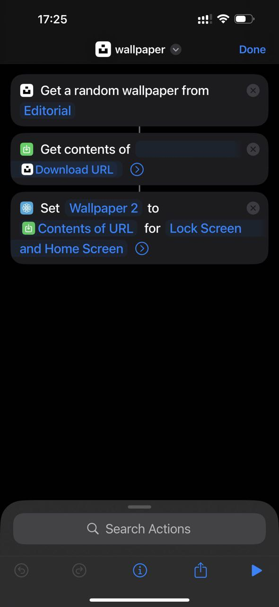
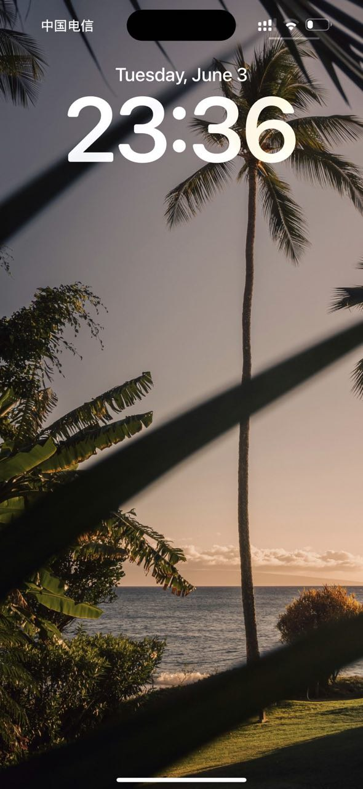

掌握 iOS 快捷指令 | AI生成和翻译
快捷指令技巧
-
使用快捷指令应用创建一个快捷指令，当你到达办公室时触发。这个快捷指令会自动打开企业微信应用，方便你打卡。
-
使用澳门SIM卡作为蜂窝网络时，无需VPN即可访问全球网络。但连接Wi-Fi时切换VPN会变得不方便。快捷指令可以帮助你解决这个问题。
-
你可以使用快捷指令提醒自己打篮球或进行其他活动。
-
快捷指令非常适合那些有用但不必不可少的提醒。
-
使用快捷指令提醒自己还房贷、每月信用卡账单或报名考试。
iOS壁纸更换快捷指令
https://www.icloud.com/shortcuts/f972a5bc6f9c43109f7461465b4be2ee
这个快捷指令可以更换iOS的壁纸。我已经使用了几个月，效果非常好。在每周的特定日期，下午3:14，这个快捷指令会自动在我的iPhone上运行。它简单且有效。它会从Unsplash下载一张图片并设置为壁纸。需要注意的是，你需要先安装Unsplash应用。
使用类似的方法通常比购买或购买壁纸应用更好。
我是从Andrej Karpathy那里学到设置3:14的提醒的，他用这个时间拍摄照片。
 来源：截图
 来源：截图